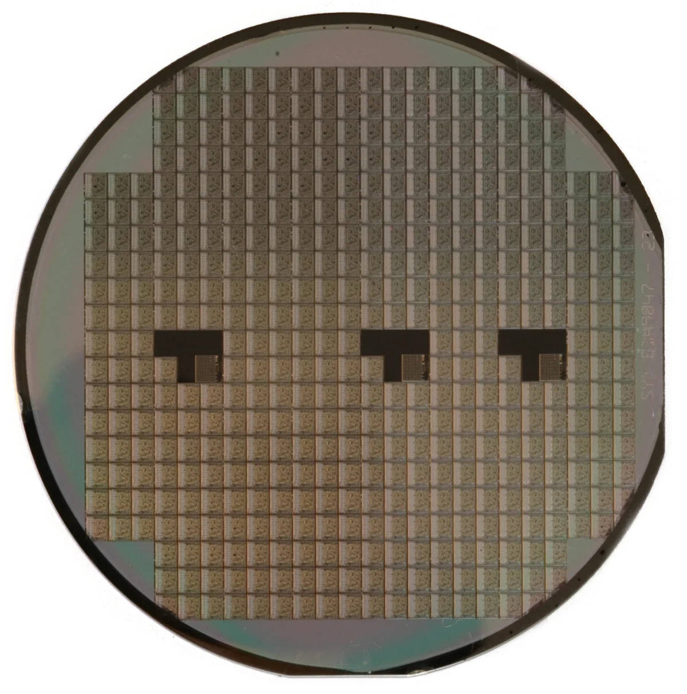

工艺与控制要求
| 应用场景 | 评估要点 |
|---|---|
| 温度曲线 | 明确晶圆材料和工序，确定升温、保温、降温、温度均匀性目标及测量方法。 |
| 工艺气体与洁净度 | 按设备和工序明确气体组成、纯度、流量、压力和污染物限值。 |
| 晶圆与批次追溯 | 定义晶圆或批次编号、配方、实测数据和报警的关联方式，并列出设备及上位系统接口。 |
相关工艺、产品与技术资料
讨论您的应用
请提供晶圆材料与尺寸、工序、设备型号、工艺气体规格和接口要求。

| 应用场景 | 评估要点 |
|---|---|
| 温度曲线 | 明确晶圆材料和工序，确定升温、保温、降温、温度均匀性目标及测量方法。 |
| 工艺气体与洁净度 | 按设备和工序明确气体组成、纯度、流量、压力和污染物限值。 |
| 晶圆与批次追溯 | 定义晶圆或批次编号、配方、实测数据和报警的关联方式，并列出设备及上位系统接口。 |
请提供晶圆材料与尺寸、工序、设备型号、工艺气体规格和接口要求。